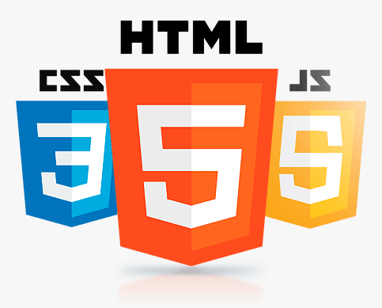
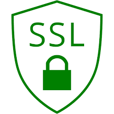
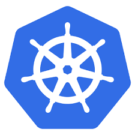
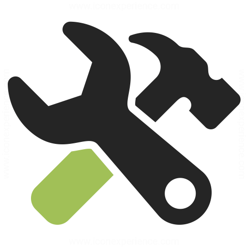

Online development references
Web development
MDN HTML element reference
MDN CSS reference
Google fonts
SSL
SSL Key Usage & Extended Key Usage
AKS
AKS intro
Develop & deploy application on AKS
AKS reference architecture secure baseline
AKS reference architecture microservice
Development tools
Structurizr: tool to declaratively create (c4 model) diagrams
TestMe: Intellij plugin for generating unit tests